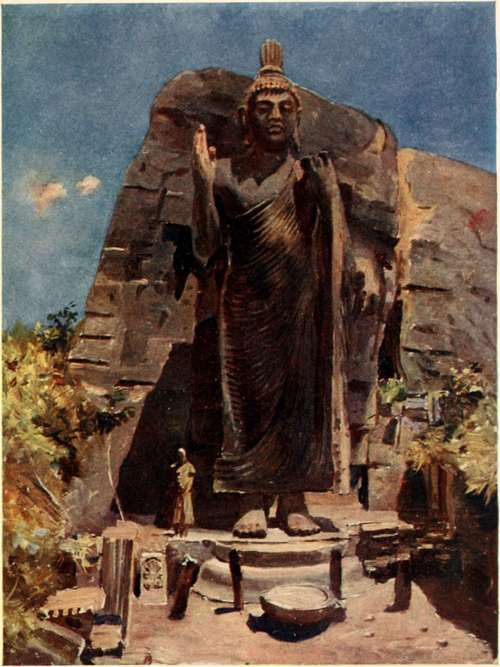
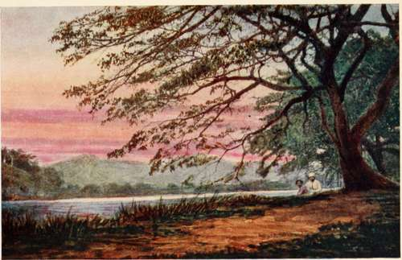

Chapter II. In Days Gone By
Description
This section is from the book "Ceylon", by Alfred Clark. Also available from Amazon: Ceylon.
Chapter II. In Days Gone By
The earliest accounts of Ceylon are purely legendary. According to Hindu mythology, the island, then called Lanka, was, aeons ago, under the sway of Ravana, a demon-king, whose power was so great that he became the terror of the worlds. The gods, living in their celestial abodes on the sacred mountain Maha. Mem, became alarmed. Ravana, undismayed by their hostility, seized Sita, the beautiful wife of Rama, one of the manifestations of the god Vishnu, and carried her off to his palace among the mountains. Rama collected a vast army to recover his wife, and it crossed over to the island by a causeway built by his ally, Hanuman, the monkey-god, who piled mountains in the sea from shore to shore, the chain of rocks and sand now called Adam's Bridge. A terrific war followed. Ravana was slain and Sita rescued. The whole story is a nightmare of roaring demons, giants, bestial monsters and enchanters, wallowing: in maelstroms of blood.
It is not known who were the original inhabitants of the island ; their very name has been forgotten, the few hundred people still living, and believed to be their descendants, being spoken of merely as the Veddahs, or hunters. They are referred to by ancient writers either as Yakkhos (demons) or as Nagas (snakes), probably on account ot their cruel and treacherous dispositions. All that is related of them is that the Indian, Persian, Arab, and even Egyptian and Greek merchants who visited the island, creeping along the coasts in their galleys, traded with them in a curious way. The people of the country never showed themselves, but placed on the shore during the night the products of their forests and fields, with well-understood signs to intimate what they wanted in exchange. Neither sellers nor buyers ever saw each other in this wonderful system of barter !
The history of Ceylon, though, of course, much mixed with monstrous exaggeration and ridiculous fables, is given in the " Mahawanso," a metrical chronicle in the ancient Pali language. It contains a dynastic account of the island for twenty-three centuries, and its statements have in many instances been verified by monuments, rock inscriptions and coins discovered.
In the year 543 b.c., about two hundred years after the founding of Rome, Wijayo, the outlawed son of a petty Rajah in the Valley of the Ganges, collected a band of desperadoes, and made a descent on the island. In order to gain a footing, he married the daughter of one of the aboriginal chiefs, but repudiated her as soon as he had established himself firmly. He introduced the Hindu religion, but it is probable that it did not replace that of the aborigines, which was no doubt a debased form of Nature-worship.
He was followed by one hundred and sixty-five Kings and Queens, only a few of whom distinguished themselves in any way. It took more than two hundred years to reduce the aboriginal inhabitants to subjection, and for many centuries afterwards the Kings of Ceylon were constantly engaged in repelling invasions of Tamil hordes from South India. Five times were they forced by their enemies to change their capital, and several times foreign usurpers sat on the throne.
At length, in 307 b.c. a great King arose, whose native name meant " Beloved of the Holy Ones." He it was who began the building of the great edifices, second only in size and magnificence to those of ancient Egypt, the ruins of which still exist. After him, from time to time other great Kings carried on this work.
In the course of time the country was covered with tanks, or artificial reservoirs, for irrigating the great stretches of paddy-fields. They were formed by throwing up great embankments across the embouchures of valleys, and providing them with spill-waters and sluices of cut stone. Some of these were of immense size, the largest being twenty miles in circuit, and with a bund, or embankment, twelve miles long. Water was brought to them from the distant hills by artificial rivers, and they were linked together by canals, which carried the overflow of each to its neighbour at a lower level. All these were constructed by the forced labour of many thousands of people, under the guidance of Brahmin engineers.
In addition to these gigantic works of utility, many great dagobas, or relic-shrines, were erected. These were bell-shaped miniature hills, built generally of brick, with ornamental stone bases, and surmounted by a terminal in the form of a cube supporting a pointed spire. The largest of these, still in existence, is loftier than the dome of St. Paul's! Beautiful wiharas, or temples, and vast pansalas^ or monasteries, mostly of cut stone, were also built, and cave shrines excavated.
These immense and beautiful buildings were erected in honour of a great teacher named Buddha, born 624 b.c, and in furtherance of his doctrines. His religion, if it may be so called, was introduced into Ceylon about 393 b.c., and became the national faith.
Some of the Kings distinguished themselves by their piety, even going so far as to resign their sovereignty from time to time for a few days in favour of the high-priests. They frequently clothed all the priesthood throughout the island, giving three robes to each ; bestowed numberless lamps on the temples; maintained colleges of teachers ; distributed vast quantities of rice in time of famine; and founded hospitals for the infirm.
One King is said to have been so pious and so conscientious that, recollecting that he had, when a boy, eaten a chilli without offering a portion of it to a priest, he imposed on himself, as a punishment for his crime, the building of a great ddgoba, the Miriswettiya, which stands to this day !
A statue of buddha.
Another King, it is related, so pleased the celestial powers by his virtues that they caused rain to fall only at night and at regular intervals during his reign, to the great content and convenience of the people !
A goodly number of these royal personages were, however, of very different character. The most wicked of them was probably Anula the Infamous, a Queen whose life was spent in murder and in the indulgence of her passions.
The most famous of the Kings was Dutugemunu, who assumed the chattel^ or canopy of dominion, in 161 B.c. At that time all the northern parts of the island were under the rule of Elala, a brave and chivalrous Tamil chief. The young King collected an army, and led it, mounted on his war-elephant, against the usurper, whom he eventually defeated and slew.
In the twelfth century another great King not only repelled an invasion of Tamils from India, but carried the war into their own country. He also sent an army against the King of Cambodia, in the Far East, and made that distant land tributary to him.
After this period, however, owing to the constant wars, the kingdom broke up. When a band of Portuguese adventurers came to the island in 1505, in their bluff-bowed, high-sterned caravels, they found it divided under seven separate rulers. One of these was the descendant of the ancient Kings, and held his court at Kandy, among the mountains, while the northern and eastern parts were in the permanent occupation of the Tamils.
The Lake Near Kandy.
The Portuguese conquered the maritime districts of the island, and for one hundred and fifty years maintained a military occupation of the territory won. An army of Roman Catholic priests came with them, who made thousands of converts.
The Dutch, the great rivals of the Portuguese in the East, finally expelled them from the island in 1656. They, too, made great efforts to convert the natives to their ideas of Christianity, but without much permanent success. Trade was, however, the principal object of both nations, and they practically enslaved their native subjects to that end. Hundreds of elephants were caught annually and sold to Indian potentates. Pearl-fisheries were held frequently, yielding great revenues. The cultivation of cinnamon was made a monopoly, and was protected by stringent laws. The peeling, selling, or export of a single stick of the spice, or even wilful injury to a plant, was punished by death. The Portuguese did nothing for the material welfare of the country, but the Dutch constructed roads and canals.
In 1797 the territories of the Dutch in Ceylon were wrested from them by the British. Eighteen years later the King of Kandy, a cruel monster, the descendant of the old Kings of Ceylon, was deposed and exiled to South India. For three hundred years these Kings of Kandy, secure in their mountain capital, the only paths to which led through almost uninhabited forests and were barred by thorn-gates, had defied the power of the Portuguese and Dutch, but in 1815 their misrule came to an end. Ever since then Ceylon has been a Crown Colony, ruled by a Governor, with two Councils to assist him.
No better example of " time's revenge " is to be found in history than the changes Ceylon has seen in the last two thousand years. In the days of the Singhalese Kings the great plains boasted of several large cities, full of magnificent royal and religious edifices ; scores of huge reservoirs and thousands of smaller ones, irrigating wide stretches of paddy-fields, which supported an immense population, scattered in villages from sea to sea. The mountains were then covered with impenetrable wild-beast-infested forests, and were supposed to be the abode of yakkhos, or demons. Now the low-country, as it is called, is a sparsely populated, forest-clad waste ; the palaces and temples are in ruins, and buried in the debris of ages ; the embankments of the reservoirs are breached, and their beds are covered with forest. Scarcely any signs remain of the ancient paddy-fields. On the other hand, the once uninhabited mountains teem with.
Continue to: